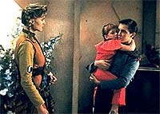
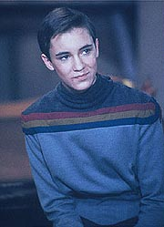
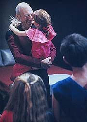
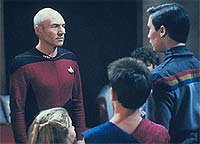
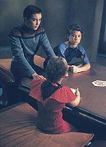

|
MANCHETE
DO EPISDIO
Histria
com destaque para Wesley
discute preocupaes contemporneas
Episdio
anterior | Prximo
episdio
Sinopse:
Data Estelar: 41509.1.
A Enterprise atrada at Aldea, um planeta completamente
protegido por um dispositivo de invisibilidade. Num ato desesperado
para dar continuao a sua espcie (que est estril), o povo
de Aldea rapta vrias crianas da Enterprise, inclusive Wesley
Crusher.
 A
princpio, eles acreditam sinceramente que a nave estelar vai
concordar em deixar as crianas por um preo, mas quando percebem
que Picard est irredutvel, utilizam seu poderoso computador para
atirar a Enterprise a trs dias de distncia do planeta.
Enquanto Picard tenta dar continuidade s negociaes, Beverly
Crusher faz o possvel para descobrir a razo da esterilidade em
Aldea, na esperana de reverter a situao e trazer as crianas
de volta.
 Com
a ajuda de Wesley, ela descobre o porqu da esterilidade dos Aldees:
o mesmo escudo de camuflagem que protegia seu mundo de estranhos
estava destruindo a camada de oznio do planeta, permitindo a seus
habitantes uma exposio intolervel radiao proveniente de
seu sol.
Enquanto isso, Data e Riker conseguem penetrar as defesas do planeta
e se transportar para a superfcie, onde eles sabotam seu
computador principal, o Zelador.
Com sua tecnologia desabilitada e incapazes de reagir, os Aldees so
obrigados a abrir mo das crianas e acabam por aceitar a ajuda da
Federao para desativar o sistema de camuflagem e tratar os
doentes.
Comentrios:
"When the Bough Breaks" mais um
daqueles episdios que nasceram de problemas contemporneos. As
referncias ao fato de que a destruio da camada de oznio
estaria trazendo esterilidade para a populao de Aldea so
absolutamente consistentes com temores da poca, existentes at
hoje, de que os europeus (e a humanidade como um todo) estivesse
passando por problemas de fertilidade por razes ambientais.
 Seguramente
este foi o ponto de partida para a criao do episdio. E se a
raiz foi a mesma de muitas outras histrias do primeiro ano da srie,
o resultado final tambm no foi muito diferente --um episdio
estabelecido de forma bastante bvia e cansativa, a partir de uma
premissa at slida, mas que daria pouca margem a variaes.
Mais uma vez os roteiristas se viram presos em sua prpria
estrutura narrativa, que enfoca uma situao destinada a
transmitir uma "moral da histria", em vez de usar melhor
os personagens, para benefcio do entretenimento.
O conceito por trs de Aldea em si de fato interessante --um
equivalente a Atlntida, em termos
terrestres-- e acaba sendo at coerentemente explorado. A dependncia
das mquinas, mostrada no episdio, outro tema recorrente de Jornada
nas Estrelas, desde o tempo da Srie Clssica.
 O
artifcio utilizado para dar prosseguimento trama --as supostas
"negociaes" de Picard por uma compensao pelas
crianas-- simplesmente no funciona. Esteve claro desde o incio,
at para os Aldees, que no haveria espao para negociatas a
esse respeito. A lgica seria os raptores interromperem o batepapo
e sumirem para sempre --mas se eles fizessem isso, acabava o episdio.
Mesmo a incluso da "compensao" como um costume de
Aldea, idia que visava preservar a consistncia da "estranha
benevolncia" dos aliengenas, no conseguiu salvar essa
parte do enredo.
Wesley, o personagem regular mais destacado do episdio, consegue
ser inexpressivo at liderando um grupo de crianas, mostrando
como os produtores tinham dificuldade em achar um bom
"tom" para o menino-prodgio. Os outros regulares
passaram batido pelo episdio, como se nem tivessem participado
direito da histria.
 O
ponto menos consistente de todos, entretanto, o desfecho. Os Aldees
simplesmente engoliram muito fcil a histria de que o campo de
fora os estava matando! Eles seguramente teriam enorme dificuldade
e receio para aceitar esse fato, principalmente vindo de um grupo de
extraterrestre que tinha seus prprios interesses em jogo.
Em resumo: um episdio fracassado, embora bem-intencionado. Alis,
de boas intenes, a primeira temporada est cheia...
Citaes:
Beverly - "Our
children are not for sale, at any price."
("Nossas crianas no esto venda, por nenhum preo.")
Trivia:
 No roteiro original existia uma cena em que a Enterprise era
obrigada a se separar em seo disco e engenharia, e a seo
disco, com os civis da nave, seria mantida como refm. Porm essa
cena foi cortada do roteiro final.
No roteiro original existia uma cena em que a Enterprise era
obrigada a se separar em seo disco e engenharia, e a seo
disco, com os civis da nave, seria mantida como refm. Porm essa
cena foi cortada do roteiro final.
Jerry
Hardin, que aqui interpreta Radue, volta a aparecer na srie no
episdio duplo da virdada do quinto para o sexto ano, "Time's
Arrow", como o escritor Mark Twain. Ele tambm
conhecido por seu papel como o informante Garganta Profunda, em
"Arquivo-X".
Os
atores que fazem os jovens refns que nada falam neste episdio so
os irmos mais jovens de Will Wheaton (Wesley Crusher), Jeremy e
Amy.
Ficha
tcnica:
Escrito por Hannah Louise Shearer
Direo de Kim Manners
Exibido em 15/02/1988
Produo: 018
Elenco:
Patrick Stewart como
Jean-Luc Picard
Jonathan Frakes como William Thomas Riker
Brent Spiner como Data
LeVar Burton como Geordi La Forge
Michael Dorn como Worf
Gates McFadden como Beverly Crusher
Marina Sirtis como Deanna Troi
Wil Wheaton como Wesley Crusher
Denise Crosby como Natasha "Tasha" Yar
Elenco convidado:
Jerry Hardin como
Radue
Brenda Strong como Rashella
Jandi Swanson como Katie
Paul Lambert como Melian
Ivy Bethune como Duana
Dierk Torsek como dr. Bernard
Michele Marsh como Leda
Dan Mason como Accolan
Philip N. Waller como Harry Bernard
Connie Danese como Toya
Jessica e Vanessa Bova como Alexandra
Episdio
anterior | Prximo
episdio
|